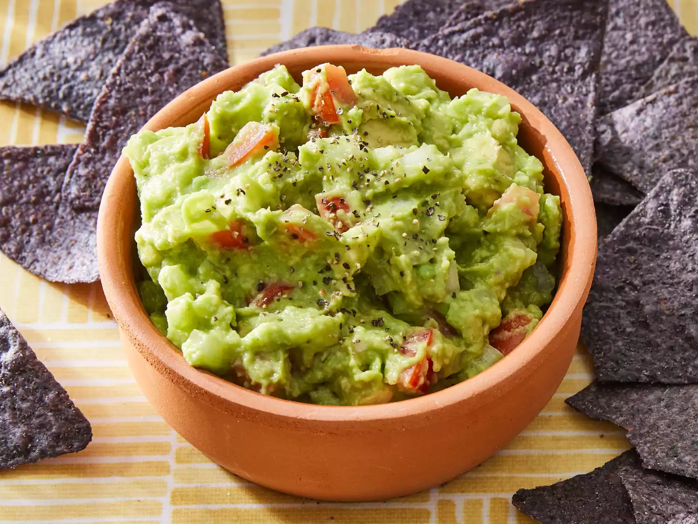

Fresh, creamy, and full of flavor, our guacamole is simply irresistible. Made with ripe avocados and fresh ingredients for an authentic taste. Perfectly seasoned to bring out every delicious bite. Easy to enjoy, whether you’re dipping, topping, or sharing. Taste the freshness. Love the flavor. Enjoy guacamole the way it should be.